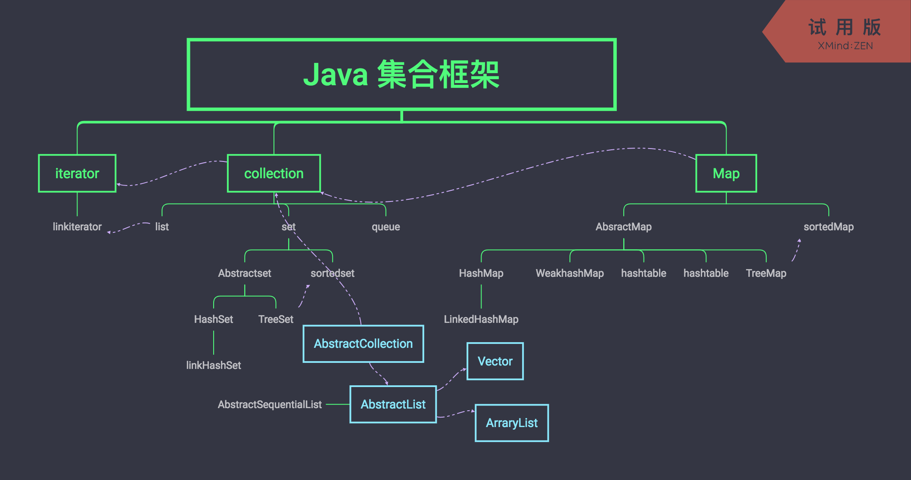

先上图

太久没搞java了，忽然，公司要搞java，只能重操旧业，再学一波。
图上的就是涵盖了所有的java集合类和map类的关系图。
集合框架是一个用来代表和操纵集合的统一架构。所有的集合框架都包含如下内容：
接口：是代表集合的抽象数据类型。例如 Collection、List、Set、Map 等。之所以定义多个接口，是为了以不同的方式操作集合对象
实现（类）：是集合接口的具体实现。从本质上讲，它们是可重复使用的数据结构，例如：ArrayList、LinkedList、HashSet、HashMap。
算法：是实现集合接口的对象里的方法执行的一些有用的计算，例如：搜索和排序。这些算法被称为多态，那是因为相同的方法可以在相似的接口上有着不同的实现。
咦？感觉网上有个哥们总结的图不错哦。呐，拿去!
- Collection 接口
Collection 是最基本的集合接口，一个 Collection 代表一组 Object，即 Collection 的元素, Java不提供直接继承自Collection的类，只提供继承于的子接口(如List和set)。
Collection 接口存储一组不唯一，无序的对象。 - List接口
List接口是一个有序的 Collection，使用此接口能够精确的控制每个元素插入的位置，能够通过索引(元素在List中位置，类似于数组的下标)来访问List中的元素，第一个元素的索引为 0，而且允许有相同的元素。
List 接口存储一组不唯一，有序（插入顺序）的对象。 - Set
Set 具有与 Collection 完全一样的接口，只是行为上不同，Set 不保存重复的元素。
Set 接口存储一组唯一，无序的对象。
Set和List的区别 很重要
Set 接口实例存储的是无序的，不重复的数据。List 接口实例存储的是有序的，可以重复的元素。
Set检索效率低下，删除和插入效率高，插入和删除不会引起元素位置改变 <实现类有HashSet,TreeSet>。
List和数组类似，可以动态增长，根据实际存储的数据的长度自动增长List的长度。查找元素效率高，插入删除效率低，因为会引起其他元素位置改变 <实现类有ArrayList,LinkedList,Vector> 。
总结来说，如果这个数据又长又臭又很少查询，就用set。否则用list。毕竟，你插入数据无非就是为了查询。
好了，说那么多无非就是用起来而已嘛。贴个代码。1
2
3
4
5
6
7
8
9
10
11
12
13
14
15
16
17
18
19
20
21
22
23
24
25
26
27
28
29import java.util.*;
public class Test{
public static void main (String [] args){
List<String> list=new ArrayList<String>();
list.add("Hello");
list.add("World");
list.add("HAHAHAHA");
//第一种遍历方法使用foreach遍历List
for (String str : list) { //也可以改写for(int i=0;i<list.size();i++)这种形式
System.out.println(str);
}
//第二种遍历，把链表变为数组相关的内容进行遍历
String[] strArray=new String[list.size()];
list.toArray(strArray);
for(int i=0;i<strArray.length;i++) //这里也可以改写为 foreach(String str:strArray)这种形式
{
System.out.println(strArray[i]);
}
//第三种遍历 使用迭代器进行相关遍历
Iterator<String> ite=list.iterator();
while(ite.hasNext())//判断下一个元素之后有值
{
System.out.println(ite.next());
}
}
}